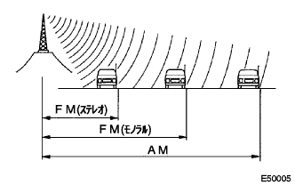
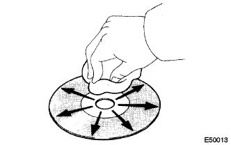

ラジオ放送で使用されるラジオの周波帯は以下の通りである。

”ワイドマルチAVステーシヨン”システム 機能説明 |
ラジオ放送で使用されるラジオの周波帯は以下の通りである。
|  |
AMとFMモノラルのサービス範囲の大きさにはかなりの差があり、AMがはっきり受信できても、FMステレオ放送が受信できないことがある。また、FMステレオはサービス範囲が最も小さいだけでなく、雑音やその他の干渉(“フェージングノイズ”“マルチパスノイズ”“フェイドアウト”)を受けやすい。
 |
フェージングノイズ
AM放送は、電気的干渉の他に、特に夜になると別の干渉も受けやすい。それはAM電波が夜になると電離層に反射し、その反射した電波が、車両のアンテナに直接届く同じ放送局から発せられた電波の邪魔をして起こる。この干渉により発生するノイズを“フェージングノイズ”と呼ぶ。
 |
マルチパスノイズ
電波が障害物に反射して起こる干渉を“マルチパス”と呼ぶ。マルチパスは、放送局のアンテナから発せられた信号がビルや山に反射して、直接受信される信号の邪魔をする時に起こる。この干渉により発生するノイズを“マルチパスノイズ”と呼ぶ。
 |
フェイドアウト
FM電波はAM電波よりも高い周波数なので、ビルや山などの障害物に反射する。このため、車両がビルや障害物などの陰になると、FM信号が徐々に消えたり弱くなったりする。この現象を“フェイドアウト”と呼ぶ。
ノイズのための質問表
ノイズのトラブルシューティングをする上で、お客様のクレームを良く理解することが大変重要である。そこで、下の質問表を活用して、問題点を正確に診断する。
| 放送方式 | 問診内容 | 推定原因 |
|---|---|---|
| AM | 特定の場所でノイズが生じる。 | 外来雑音の可能性が高い。 |
| AM | 聞こえにくい放送を聞いている時にノイズが生じる。 | 同じ番組が各地方放送局から放送されている場合があり、もし番組が同じであれば、お客様が違う放送局を聞いている可能性がある。特にNHKの場合はこうした間違いがよく起こる。 |
| AM | 夜になるとノイズが生じる。 | 遠く離れた放送からの電波のうなりである可能性が高い。 |
| FM | 運転中に特定の場所でノイズが生じる。 | FM周波の変化によって起こるマルチパスノイズとフェージングノイズの可能性が高い。 |
確認の際に注意すべき点
ラジオに入るノイズは、雑音防止がされているので実際の使用には通常害がなく、非常に大きなノイズが入ることもほとんどない。ラジオに非常に大きなノイズが入る場合は、アンテナが取り付けられている部分のアースが正常であるか確認すること。
正規の雑音防止部品がすべて正しく取り付けられているか、また、社外品を取り付けたり、正規外の配線をしていないか確認すること。
ラジオのチャンネルを合わせない(放送に同調しない)ようにすると、雑音が顕著に発生し、現象判断が容易になる。
アンテナとノイズ
アンテナによって受信される電気信号は、同軸ケーブルのコアワイヤを通ってラジオに伝達される。電波以外のノイズ波は、このコアワイヤに入り込み、ラジオにノイズを引き起こす。ノイズがラジオに入り込むのを防止するために、同軸ケーブル内のコアワイヤは、シールドワイヤと呼ばれる網目状のワイヤで覆われている。このシールドワイヤはノイズをアースに流すことによって、ノイズが入り込むのを防ぐ。
 |
このプレーヤは、図のマークのついた音楽用CDのみ使用できる。
|  |
クリーニング
CDのよごれは、プラスチック用メガネふきなどの柔らかく乾いた布で、中心から外側へ放射状方向に軽く拭いて清掃する。
 |
使用ディスク
このプレーヤは、図のマークのついたMDのみ使用できる。

“ワイドマルチAVステーションシステム”は、AVC-LANにより機器間の通信を行う。
AVC-LANのマスターとなる機器はナビゲーションレシーバASSY(“ワイドマルチAVステーション”)である。
ナビゲーションレシーバASSY内部に通信伝達に必要な抵抗(TX+←→TX-端子間60-80Ω)が入っている。
AVC-LAN回路において、通信線のショート、+BショートおよびGNDショート等の異常が発生した場合は、通信の中断に伴い“ワイドマルチAVステーション”システムは正常に作動しない。
“ワイドマルチAVステーション”システムにはダイアグノーシス機能があり、AVC-LANによって接続されている機器の接続確認および故障診断を行うことができる。(検査結果はディスプレイ部に表示)
AVC-LANを構成する機器には、機器コード(物理アドレス)と呼ばれる3桁の数字(16進数で表記)が設定されている。
AVC-LAN機器の内部を構成する各機能(ユニット)には、論理アドレスと呼ばれる2桁の数字(16進数で表記)が設定されている。
“ワイドマルチAVステーション”システムにはバックガイドモニターシステムの調整機能があり、バックガイドモニターシステム関係部品を脱着した際にはダイアグノーシス画面を使用しての調整が必要。(要領は 参照)
参照)